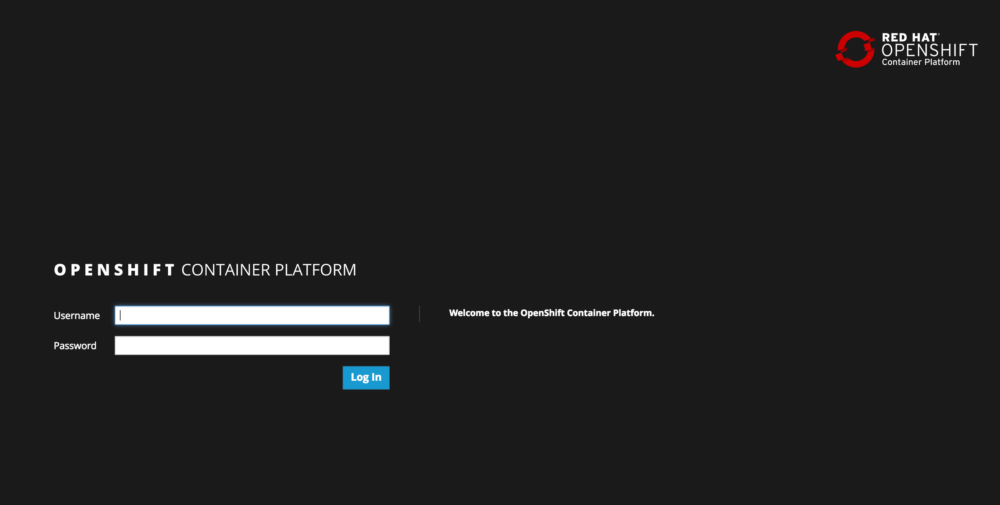

This lab provides a quick tour of the console to help you get familiar with the user interface along with some key terminology we will use in subsequent lab content. If you are already familiar with the basics of OpenShift simply ensure you can login and create the project.
We will be using the following terms throughout the workshop labs so here are some basic definitions you should be familiar with. You'll learn more terms along the way, but these are the basics to get you started.
OpenShift provides a web console that allows you to perform various tasks via a web browser. Additionally, you can utilize a command line tool to perfrom tasks. Let's get started by logging into both of these and checking the status of the platform.
Use your browser to navigate to the URI provided by your instructor and login with the user/password provided.
https://<workshopname>.master.0.redhatgov.io:8443

Login Webpage
Once logged in you should see your available projects - or a button to create a project if none exist already.
First let's create a new project to do our workshop work in. We will use the student number you were given to ensure you don't clash with classmates, so in the steps below replace 'YOUR#' with your student number.
Click on the "New Project" button and give it a name of demo-YOUR#
Populate "Display Name" with "demo-YOUR#" and populate "Description" boxes with whatever you like. And click "Create"
This is going to take you to the next logical step of adding something to the project, but we don't want to do that just yet.
Click the "demo-YOUR#" link on the top left to goto your project
Don't worry, it's supposed to look empty right now because you currently don't have anything in your project (we'll fix that in the next lab).
Open a terminal and login using the same URI with following command:
$ oc login https://<workshopname>.master.0.redhatgov.io:8443 --insecure-skip-tls-verify=true
Check to see what projects you have access to:
$ oc get projects
You just created a project using the web console, let's tell the terminal command line tool to use it.
Type the following command to use the demo project:
$ oc project demo-YOUR#
Type the following command to show services, deployment configs, build configurations, and active deployments (this will come in handy later):
$ oc status
You should now be ready to get hands-on with our workshop labs.